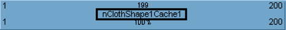
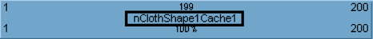

重命名 nCache 片段
- 在场景视图中，选择要重命名缓存片段的对象。
- 在“Trax 编辑器”(Trax Editor)中，选择“列表 > 加载选定角色”(List > Load Selected Characters)。
当前对象的所有缓存在轨迹视图中均显示为片段。
- 双击 (
 ) 要更改的 nCache 片段的名称。 
) 要更改的 nCache 片段的名称。  - 键入缓存片段的新名称，然后按
 键。
键。 nCache 片段及其相应节点和“属性编辑器”(Attribute Editor)选项卡的名称将更改为键入的新名称。
重命名 nCache
- 选择要重命名 nCache 的对象。
- 在“属性编辑器”(Attribute Editor)中，选择要重命名的 nCache 的选项卡。
- 在“cacheFile”字段中，删除当前名称，键入缓存的新名称并按 键。
选定 nCache 选项卡及其相应缓存片段的名称将被更改为 cacheFile 字段中键入的名称。